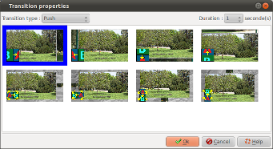

Introduction
The transition properties dialog
box allows to define the entering transition for a slide :

This dialog box is called in double clicking the transition zone
of slides since the timeline of the main window.
Description of the dialogue box
| Transition type |
Allows to select a
transition family :
No transition
|
No transition :
The upcoming slide replaces immediately the
outgoing slide.
To note that in that case, it also deactivates:
- Sound fades (The playlist of the upcoming
slide replaces immediately the playlist of
the outgoing slide)
- Background transitions
|
Basic
|
Dissolve effet :
The slide appears gradually: its opaqueness
increases gradually.
|
Scripted
transition
|
Zoom : The
upcoming slide appears by getting bigger while
the outgoing slide disappears with an effect of
dissolve.
Slide : The upcoming slide glide on the outgoing
slide while the outgoing slide disappears with
an effect of dissolve.
Push : The upcoming slide takes the place of the
outgoing slide by pushing it
|
LUMA transition
|
The animation is
based on a mask of luminance : More points are
dark in the mask and faster points corresponding
of the upcoming slide take the place of points
corresponding of the outgoing slide.
|
|
Duration
|
Allows to define the
animation duration.
Possible choice are:
- 0,5 secondes (very slow)
- 1 seconde (normal)
- 2 secondes (quick)
- 4 secondes (very quick)
|
See also
ffDiaporama 0.99.alpha3 -
July 2011
 Define the
entering slides transitions
Define the
entering slides transitions